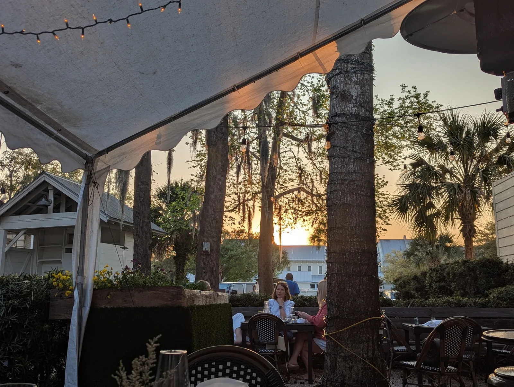
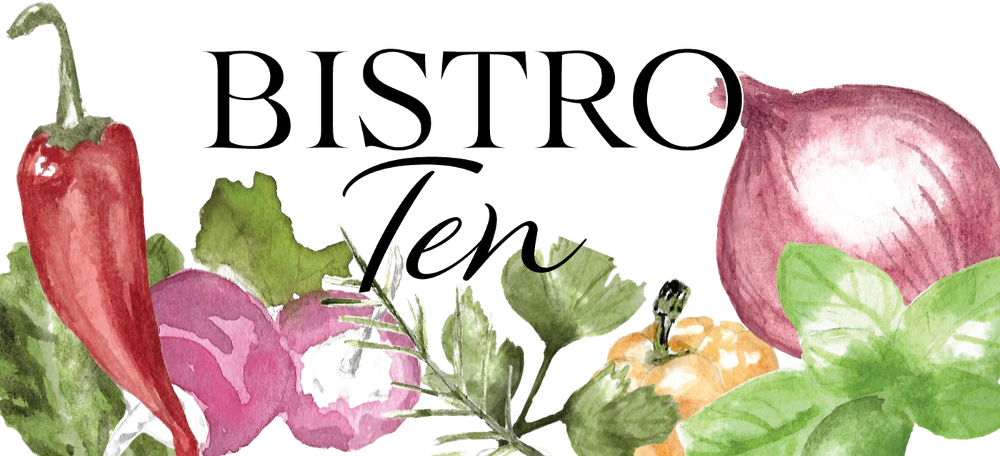
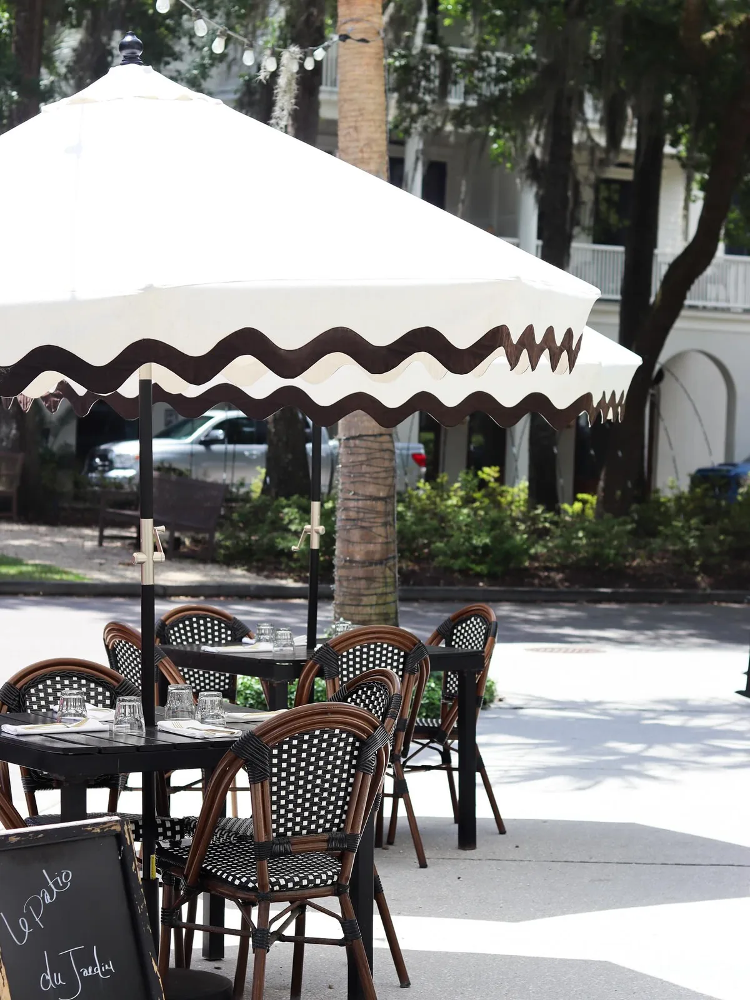
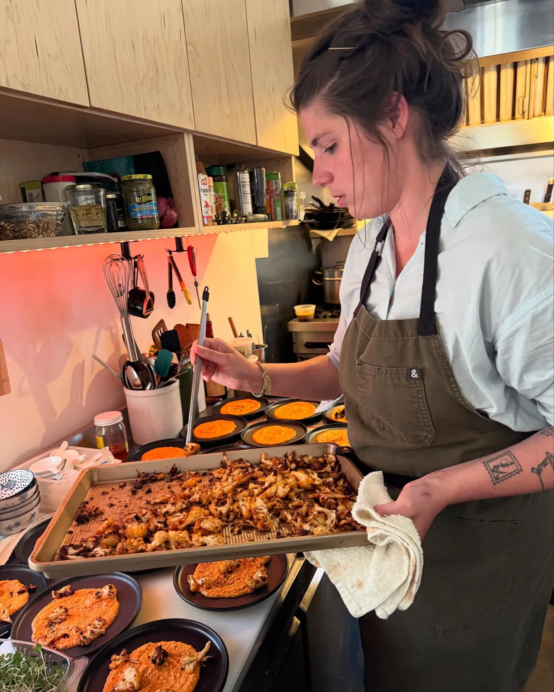
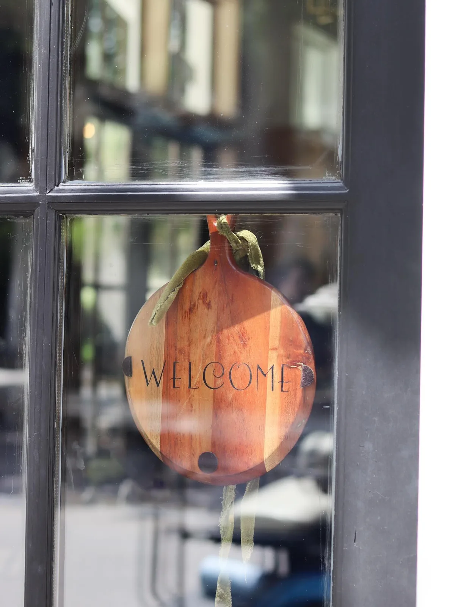

The beds are
part of the
dining room.
Raised planters run the length of the patio. You eat beside them, and quite often you eat out of them.


Grown here, cut here, plated here.
Herbs and garden radishes come off the planters that line the patio and go onto the board the same day. When the menu says garden radishes or garden tomatoes, it means the ones you are sitting next to.
The rest of the growing is done by Bryan McCaffree, who keeps the beds and has been billed on our own event posters as “guest chef and gardener extraordinaire” — a fair description of a man who also runs a horse farm outside the village.
What we don’t grow, we buy from people we know by name.
Our commitment to environmental stewardship extends beyond the plate.
Hardee Greens
Vertically farmed greens grown about an hour down the road. They turn up in the Bistro Ten Garden Salad and under most of what leaves the pass.
Local shrimp
Bought directly from local fishermen. It is the shrimp in the shrimp salad, and the reason we will not put anything else on that plate.
Lady’s Island Oysters
Our oyster nights are hosted with farm manager Julie Davis — a marine biologist who studied oyster farming at Auburn and tells the story better than we can.
Neighbouring farms
Produce from the farms around Habersham. What arrives that week is what gets printed on that week’s card.
Black-and-white chairs, a rickrack awning and a lot of shade.
French bistro chairs, black tables, striped cushions and a canopy strung with lights. It is where most people ask to sit, and in Beaufort that is nine months of the year.
Dogs are welcome out here — they get a bowl of water without being asked. In the evening the lights come on and the whole village goes quiet under the oaks.


The food is fresh from farm to table and each plate is more delicious than the next — you will find it hard to choose.A guest, on Google

Simplicity, flavour, and the joy of sharing a meal.
That philosophy belongs to our head chef, and it is why the card is short. Fewer dishes, better ingredients, cooked the day they arrive.
It is also why the menu moves. Guests who come often will tell you it changes every few months — sometimes with the season, sometimes on a whim.
10B Market, in the village of Habersham.
Ten minutes from downtown Beaufort, under the live oaks. Street parking is easy and the whole village is walkable — our sister restaurant Criollo is next door at 9 Market.
| Tuesday | Lunch only, 11am–3pm |
| Wed–Sat | Lunch 11am–3pm · Dinner 5pm–8pm |
| Sun & Mon | Closed |
